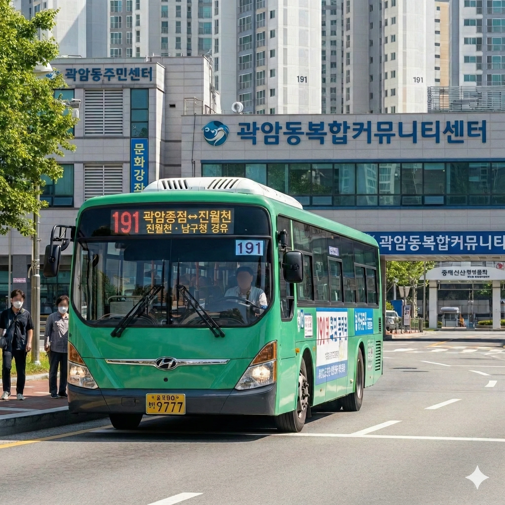

분류: 효빈광역시의 시내버스 | 효빈광역시 지선버스
효빈광역시
지선버스
급행
간선
순환
지선
광역
좌석
마을
공항
투어
[ 펼치기 · 접기 ]
지선버스 노선 번호 (전체)
111
112
121
123
131
132
141
143
151
154
161
171
172
173
181
191
192
193
194
219
221
222
231
232
241
242
251
258
261
262
271
281
291
292
331
334
341
351
361
371
381
391
441
451
461
471
472
481
491
492
522
551
552
561
571
581
582
591
592
612
632
661
671
672
681
682
691
692
752
753
771
781
791
792
793
842
881
891
892
991
효빈 버스 190번대
효빈광역시 지선버스
| 기점 | 효빈대, 효빈역, 장원역 |
|---|---|
| 종점 | 곽암종점, 항동종점, 효빈공단 |
| 운수사 | 대교여객, 남주여객 |
| 배차간격 | 10~50분 |
| 인가대수 | 6~10대 |
효빈 버스 190번대는 효빈광역시의 지선버스 노선들이다. 이 문서에서는 191번, 911번, 192번, 912번, 193번, 913번, 194번, 914번을 모두 서술한다.
1. 노선 정보
 |
| 190번대 버스 운행 모습 |
2. 개요
효빈광역시의 190번대 지선버스는 주로 중구, 서구, 남구, 동구 주요 거점을 연결하는 역할을 한다.
3. 특징
- 191/911번: 효빈대학교(서구)와 곽암종점(남구)을 연결하며, 20-28분 간격으로 운행한다.
- 192/912번: 효빈역(동구)과 항동종점(남구)을 잇는 노선으로, 배차간격은 16-22분이다.
- 193/913번: 효빈역과 효빈공단을 연결하며, 출퇴근 시간에는 15분, 평시에는 50분으로 배차 간격 차이가 크다.
- 194/914번: 장원역(중구)과 항동종점을 오가는 노선으로, 배차간격은 10~35분이다.
4. 정류장 및 시간표
🚌 191번 (효빈대 → 곽암종점)
| 기점 | 효빈대 | 종점 | 곽암종점 | ||
| 운수사 | 대교여객 | 배차간격 | 평일 20분 / 주말 28분 | ||
| 첫차/막차 | 05:05 / 22:08 (기점 출발) | ||||
| 회차 | 기점(효빈대) 출발 | 종점(곽암) 도착(예상) |
|---|
🚌 911번 (곽암종점 → 효빈대)
| 기점 | 곽암종점 | 종점 | 효빈대 | ||
| 운수사 | 대교여객 | 배차간격 | 평일 20분 / 주말 28분 | ||
| 첫차/막차 | 05:11 / 22:16 (기점 출발) | ||||
| 회차 | 기점(곽암) 출발 | 종점(효빈대) 도착(예상) |
|---|
🚌 192번 (효빈역 → 항동종점)
| 기점 | 효빈역 | 종점 | 항동종점 | ||
| 운수사 | 대교여객 | 배차간격 | 평일 16분 / 주말 22분 | ||
| 첫차/막차 | 05:10 / 22:36 (기점 출발) | ||||
| 회차 | 기점(효빈역) 출발 | 종점(항동) 도착(예상) |
|---|
🚌 912번 (항동종점 → 효빈역)
| 기점 | 항동종점 | 종점 | 효빈역 | ||
| 운수사 | 대교여객 | 배차간격 | 평일 16분 / 주말 22분 | ||
| 첫차/막차 | 05:16 / 22:50 (기점 출발) | ||||
| 회차 | 기점(항동) 출발 | 종점(효빈역) 도착(예상) |
|---|
🚌 193번 (효빈역 → 효빈공단)
| 기점 | 효빈역 | 종점 | 효빈공단 | ||
| 운수사 | 남주여객 | 배차간격 | 15~50분 (탄력배차) | ||
| 첫차/막차 | 06:10 / 22:25 (기점 출발) | ||||
| 회차 | 기점(효빈역) 출발 | 종점(공단) 도착(예상) |
|---|
🚌 913번 (효빈공단 → 효빈역)
| 기점 | 효빈공단 | 종점 | 효빈역 | ||
| 운수사 | 남주여객 | 배차간격 | 15~50분 (탄력배차) | ||
| 첫차/막차 | 06:21 / 22:36 (기점 출발) | ||||
| 회차 | 기점(공단) 출발 | 종점(효빈역) 도착(예상) |
|---|
🚌 194번 (장원역 → 항동종점)
| 기점 | 장원역 | 종점 | 항동종점 | ||
| 운수사 | 남주여객 | 배차간격 | 10~30분 | ||
| 첫차/막차 | 05:29 / 23:14 (기점 출발) | ||||
| 회차 | 기점(장원역) 출발 | 종점(항동) 도착(예상) |
|---|
🚌 914번 (항동종점 → 장원역)
| 기점 | 항동종점 | 종점 | 장원역 | ||
| 운수사 | 남주여객 | 배차간격 | 10~30분 | ||
| 첫차/막차 | 05:40 / 23:24 (기점 출발) | ||||
| 회차 | 기점(항동) 출발 | 종점(장원역) 도착(예상) |
|---|
5. 여담
- 지선버스의 고유 도색 색상(● Jade Green)이 러브 라이브! 니지가사키 학원 스쿨 아이돌 동호회의 멤버 미후네 시오리코의 이미지 컬러와 매우 흡사하여 '시오리코 버스'라고도 불린다.
본 문서는 190번대 버스 노선을 통합하여 서술합니다.